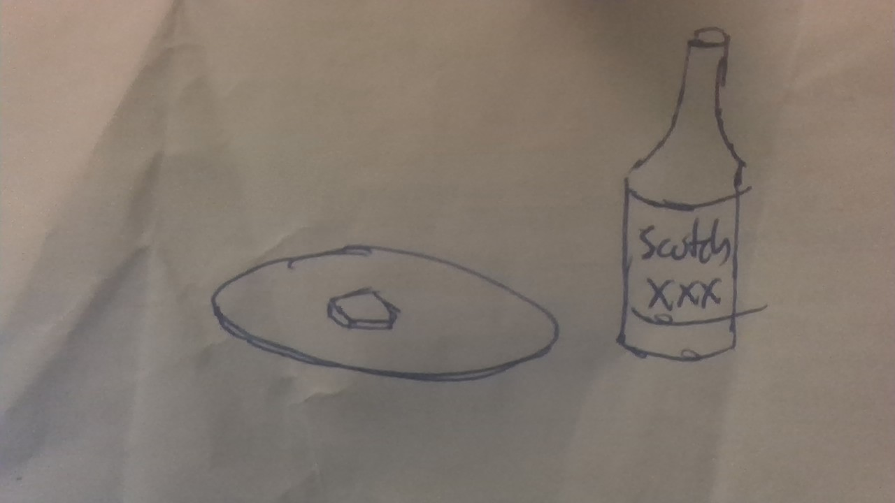

These are just normal Pancakes except there is Scotch mixed into the batter. They don't taste good, but they do make you feel good.
If you put too much Scotch in them, as sometimes will happen, the pancakes will be mushy and drip with Scotch. It's not pleasant, but don't waste the scotch.
Home